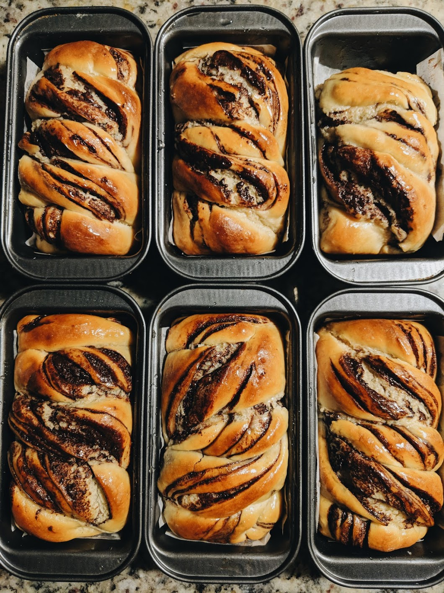

Chocolate Babka

Description
Chocolate babkas are one of my favorite things to bake, and eat!
Babka is a sweet braided enriched Jewish bread that usually has layers of chocolate braided into the the bread.
But the filling doesn't always have to be chocolate, which makes room for creativity.
You can ass any filling you want, like pumpkin puree, apple butter, red bean paste, etc.
It is all up to the baker.
This recipes yields about 3 large loaf pans or 6 mini loaf pans.
The fermentation process of the dough makes the process a little long but it is very worth it.
If you have left over babkas that has gone stale, you can always make french toat with them!
Ingredients
Babka Dough
- 1060g All purpose flour
- 200g Sugar
- 4tsp Yeast
- 2 Lemon zest
- 300g Eggs
- 1.5c Water
- 1.5tsp Salt
- 300g Butter, room temperature
Chocolate Filling
- 130g Dark chocoalte
- 120g Butter, unsalted
- 50g Powdered sugar
- 30g Cocoa powder
- .25tsp Cinnamon powder
Method of Production
Babka Dough
- Combine the flour, sugar, and yeast in a stand mixer with a dough hook attachtment.
- Add the eggg, water, and lemon zest into the flour and start mixing the dough on low speed for about 3 minutes.
- Add the salt and mix on medium speed for about 5 minutes.
- When the dough is smooth and glutenious, add the room temperature butter in thirds and keep mixing until the butter is incorporated.
- Spray a seperate bowl with nonsitck pan spray and cover with a plastic wrap and let it sit in room temperature for about an hour.
- When the dough has doubled in size, place the dough in the refridgerator overnight.
- Preheat the oven to 350 degrees Fahrenheit.
- Take the Dough and divide it into three or six portions, depending the size of the pan.
- Cover the table with flour and roll out the dough into a rectangular shape.
- Spread a thin layer of the chocolate filling and roll the dough into a log.
- Cut the dough in half, length wise and braid the two halfs together with the layered size facing up.
- Cover the loaf pans with a wet warm towel and let it proof for about an hour.
- When the doughs are done proofing, cover the pans with a foil sheet and bake it in the oven for about 40 minutes.
- Remove the foil and comtinue baking for another 15 minutes or until the top of the bread is nice and golden.
- When the internal temperature reaches 190 degrees Fahrenheit, take it out of the oven and brush a gernerous amount of simple syrup over the bread.
- Let is completelty cool in room temperature before serving.
Chocoalte Filling
- Combine the chocolate and butter ina bowl and melt them on a double boiler.
- Remove the melted chocolate and butter off the heat and whisk in the powdered sugar, cocoa powder, and cinnamon.
- Keep in warm until it is ready to use.